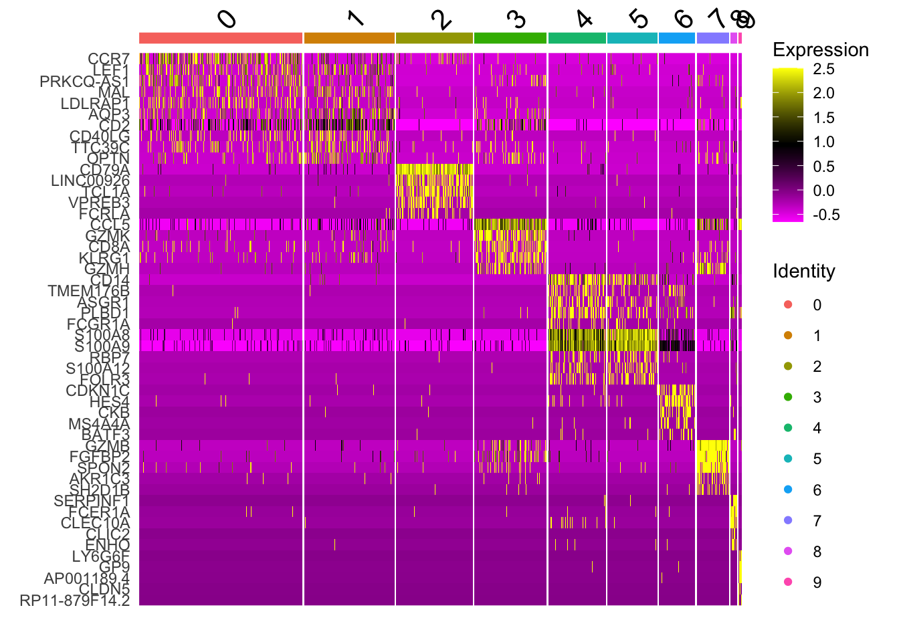
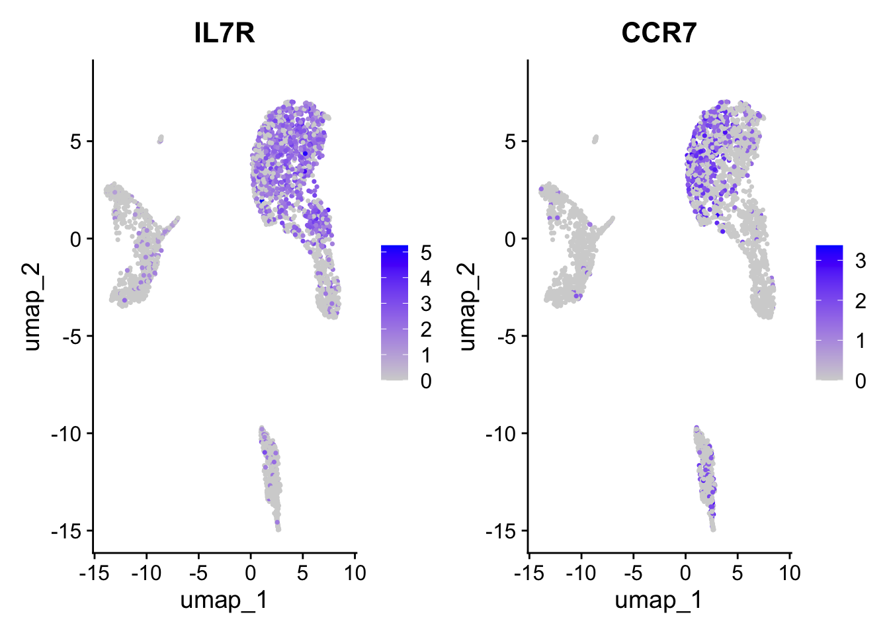
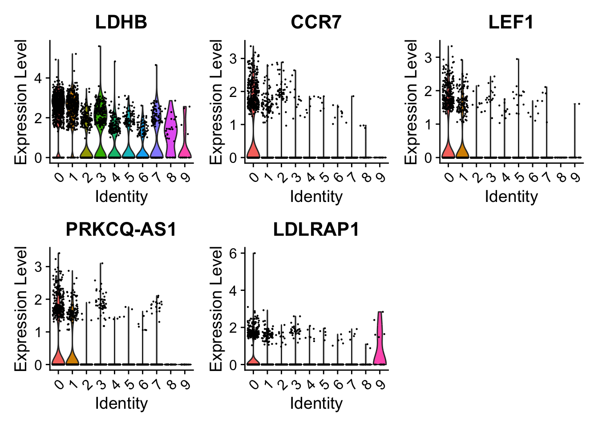
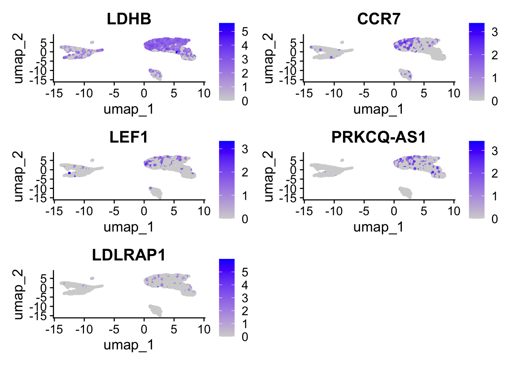

A stripped down version of Example #1, modified to allow key parameters to be easily changed in order to look at the stability of the final results.
Tests and results:
Like Example #1, nFeature_RNA is cut at 2500
FindClusters resolution is reset to the Example #1 default of 0.5
The number of Principal Components (PCs) used in clustering is generated as a series: 2, 3, 5, 7 and is compared to 10
A nice demonstration of choosing a sufficient number of PCs
Includes
Environment Load and Check
this code section is packaged as an include for reuse across all examples
library(patchwork)library(dplyr)
Attaching package: 'dplyr'
The following objects are masked from 'package:stats':
filter, lag
The following objects are masked from 'package:base':
intersect, setdiff, setequal, union
library(Seurat)
Loading required package: SeuratObject
Loading required package: sp
'SeuratObject' was built under R 4.3.0 but the current version is
4.3.2; it is recomended that you reinstall 'SeuratObject' as the ABI
for R may have changed
Attaching package: 'SeuratObject'
The following object is masked from 'package:base':
intersect
Is there a typo in the message above? Application Programming Interface, API != ABI
Rolling back to R 4.3.0 was not possible with the current version of Seurat
the indication was that Seurat requires a version of base Matrix that is not present in R 4.3.0
# which Seurat?packageVersion("Seurat")
[1] '5.0.0'
# which R?version[['version.string']]
[1] "R version 4.3.2 (2023-10-31)"
# presto was installed # For a (much!) faster implementation of the # Wilcoxon Rank Sum TestpackageVersion('presto')
[1] '1.0.0'
# check python is available via reticulateimport sysprint(sys.version.split(" ")[0])
3.12.0
# shell checkpython3-V
Python 3.12.0
Functions
# Useful for code development.# Save the object at a point and reload it into the R console # e.g. for developing alternative reports in the next section # without having to run the pipeline right from the start# which can be slowsaveRDS_overwrite <-function(file_path) {if (file.exists(file_path)) {file.remove(file_path) } saveRDS(pbmc, file = file_path)}# NB: Files produced by saveRDS (or serialize to a file connection) # are not suitable as an interchange format between machines
Process
# Verbose comments in Example #1 # This is the Example (EG) Number identfier# Should be changed for each example script# Used in storing objects as filesEGN <-'_Eg4'
# define clusters according to resolutionpbmc <-FindClusters(pbmc, resolution =0.5)
Modularity Optimizer version 1.3.0 by Ludo Waltman and Nees Jan van Eck
Number of nodes: 2638
Number of edges: 88288
Running Louvain algorithm...
Maximum modularity in 10 random starts: 0.8827
Number of communities: 10
Elapsed time: 0 seconds
#pbmc <- FindClusters(pbmc, resolution = 1.0)#pbmc <- FindClusters(pbmc, resolution = 0.2)# Look at cluster IDs of the first 5 cells# In this case we have 9 levels (0 - 8)# The structure is the relation between cell barcode and the cluster (community) head(Idents(pbmc), 5)
# Each cell that survived filtering above is represented length(Idents(pbmc))
[1] 2638
pbmc
An object of class Seurat
13714 features across 2638 samples within 1 assay
Active assay: RNA (13714 features, 2000 variable features)
3 layers present: counts, data, scale.data
1 dimensional reduction calculated: pca
# UMAPpbmc <-RunUMAP(pbmc, dims =1:n_pcs_chosen)
Warning: The default method for RunUMAP has changed from calling Python UMAP via reticulate to the R-native UWOT using the cosine metric
To use Python UMAP via reticulate, set umap.method to 'umap-learn' and metric to 'correlation'
This message will be shown once per session
18:25:19 UMAP embedding parameters a = 0.9922 b = 1.112
18:25:19 Read 2638 rows and found 7 numeric columns
18:25:19 Using Annoy for neighbor search, n_neighbors = 30
18:25:19 Building Annoy index with metric = cosine, n_trees = 50
# save the object file_path <-paste0("./seurat_object_checkpoints/pbmc_sw1",EGN,".rds")saveRDS_overwrite(file_path)# to restore# pbmc <- readRDS(file_path)# find markers for every cluster compared to all remaining cells, # report only the positive onespbmc.markers <-FindAllMarkers(pbmc, only.pos =TRUE, min.pct =0.25, logfc.threshold =0.25)
# heatmaps # note that 'wt' specifies the variable to use for ordering # we get the best markers in terms of size effectpbmc.markers %>%group_by(cluster) %>%top_n(n =5, wt = avg_log2FC) -> top_nhead(top_n,10)
# heat map shows that cluster 1 and 2 are not easily distiguished# by just a few genes others are DoHeatmap(pbmc, features = top_n$gene)

# + NoLegend()# consider the canonical cluster 0 markers# "IL7R" is not particularly good marker for cluster 0 VlnPlot(pbmc, features =c("IL7R", "CCR7"))
FeaturePlot(pbmc, features =c("IL7R", "CCR7"))

# Try the top 5# Seems like there are some better markers than IL7R e.g.s LEF1 and PRKCQ-AS1VlnPlot(pbmc, features =c("LDHB", "CCR7","LEF1","PRKCQ-AS1","LDLRAP1"))

FeaturePlot(pbmc, features =c("LDHB", "CCR7","LEF1","PRKCQ-AS1","LDLRAP1"))

Compare results
With reference to Example #1 we are just changing the number of PCs used in clustering, tSNE and UMAP
Using < 10 PCs doesnt make sense obviously (with reference to the ElbowPlot of variance by PC number) but running a series of increasing n PCs is interesting
Here is what happens when 2 instead of 10 PCs are used: